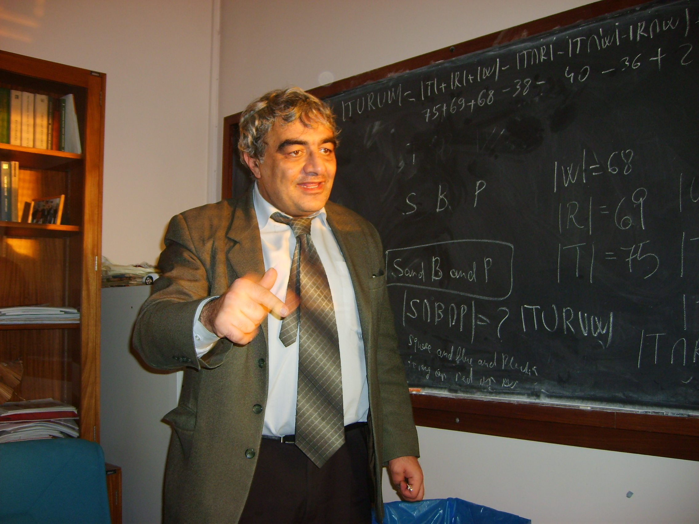

Dr Hovhannes Khudaverdian
The department of Mathematics
University of Manchester
Alan Turing Building
Oxford Road
Manchester M13 9PL, UK
FAX: (0161) 306-3669 (in the UK), (44 161) 306-3669 (from overseas)
E-mail:
khudian@manchester.ac.uk 
Contact information:
Room 1.118, Alan Turing Building
Dr Hovhannes Khudaverdian
The department of Mathematics
University of Manchester
Alan Turing Building
Oxford Road
Manchester
M13 9PL, UK
 (0161) 306-8975
(in the UK), (44 161) 306-8975
(from overseas)
(0161) 306-8975
(in the UK), (44 161) 306-8975
(from overseas)
FAX: (0161) 306-3669 (in the UK), (44 161) 306-3669 (from
overseas)
E-mail:
khudian@manchester.ac.uk
Disclaimer: this site represents my own interests, views and opinions. The University of Manchester or the School of Mathematics do not bear any responsibility for its contents. If there is a link to some document, it does not automatically mean that I agree with all its content. The same is true about any software mentioned on these pages: I do not promote any of it. This site is under permanent construction :-)
Hovhannes Khudaverdyan. 31 January 2008